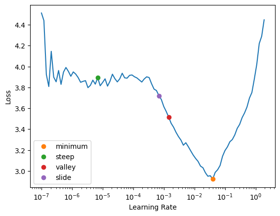
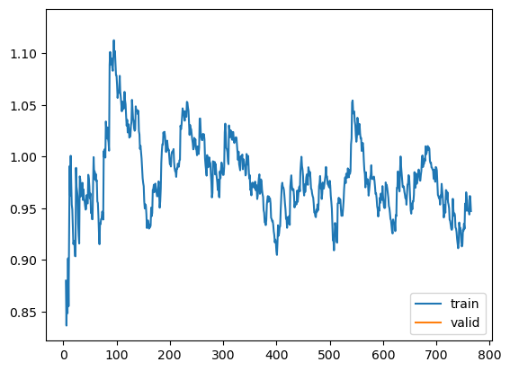

What we're running with at the time this documentation was generated:
torch: 1.9.0+cu102
fastai: 2.7.9
transformers: 4.21.2Modeling
The
text.modeling.question_answering module contains custom models, loss functions, custom splitters, etc… for question answering tasks
Setup
We’ll use a subset of squad_v2 to demonstrate how to configure your blurr code for training extractive question answering models. See the data.question_answering module if any of this setting up of the squad_df below looks unfamiliar to you.
raw_datasets = load_dataset("squad", split=["train[:1000]", "validation[:200]"])
raw_train_df = pd.DataFrame(raw_datasets[0])
raw_valid_df = pd.DataFrame(raw_datasets[1])
raw_train_df["is_valid"] = False
raw_valid_df["is_valid"] = True
squad_df = pd.concat([raw_train_df, raw_valid_df])
squad_df["ans_start_char_idx"] = squad_df.answers.apply(lambda v: v["answer_start"][0] if len(v["answer_start"]) > 0 else "0")
squad_df["answer_text"] = squad_df.answers.apply(lambda v: v["text"][0] if len(v["text"]) > 0 else "")
squad_df["ans_end_char_idx"] = squad_df["ans_start_char_idx"].astype(int) + squad_df["answer_text"].str.len()
print(len(squad_df))Reusing dataset squad (/home/wgilliam/.cache/huggingface/datasets/squad/plain_text/1.0.0/d6ec3ceb99ca480ce37cdd35555d6cb2511d223b9150cce08a837ef62ffea453)1200model_cls = AutoModelForQuestionAnswering
hf_logging.set_verbosity_error()
pretrained_model_name = "bert-large-uncased-whole-word-masking-finetuned-squad"
hf_arch, hf_config, hf_tokenizer, hf_model = get_hf_objects(pretrained_model_name, model_cls=model_cls)
max_seq_len = 128
vocab = dict(enumerate(range(max_seq_len)))preprocessor = QAPreprocessor(
hf_tokenizer, id_attr="id", tok_kwargs={"return_overflowing_tokens": True, "max_length": max_seq_len, "stride": 64}
)
proc_df = preprocessor.process_df(squad_df)
proc_df.head(1)| id | title | context | question | answers | is_valid | ans_start_char_idx | answer_text | ans_end_char_idx | proc_question | proc_context | ans_start_token_idx | ans_end_token_idx | is_answerable | |
|---|---|---|---|---|---|---|---|---|---|---|---|---|---|---|
| 0 | 5733be284776f41900661182 | University_of_Notre_Dame | Architecturally, the school has a Catholic character. Atop the Main Building's gold dome is a golden statue of the Virgin Mary. Immediately in front of the Main Building and facing it, is a copper statue of Christ with arms upraised with the legend "Venite Ad Me Omnes". Next to the Main Building is the Basilica of the Sacred Heart. Immediately behind the basilica is the Grotto, a Marian place of prayer and reflection. It is a replica of the grotto at Lourdes, France where the Virgin Mary reputedly appeared to Saint Bernadette Soubirous in 1858. At the end of the main drive (and in a direct... | To whom did the Virgin Mary allegedly appear in 1858 in Lourdes France? | {'text': ['Saint Bernadette Soubirous'], 'answer_start': [515]} | False | 515 | Saint Bernadette Soubirous | 541 | To whom did the Virgin Mary allegedly appear in 1858 in Lourdes France? | Architecturally, the school has a Catholic character. Atop the Main Building's gold dome is a golden statue of the Virgin Mary. Immediately in front of the Main Building and facing it, is a copper statue of Christ with arms upraised with the legend "Venite Ad Me Omnes". Next to the Main Building is the Basilica of the Sacred Heart. Immediately behind the basilica is the Grotto, a Marian place of prayer and reflection. It is a replica of the grotto at Lourdes, France where the Virgin Mary reputed | 0 | 0 | False |
before_batch_tfm = QABatchTokenizeTransform(hf_arch, hf_config, hf_tokenizer, hf_model, max_length=max_seq_len)
blocks = (
TextBlock(batch_tokenize_tfm=before_batch_tfm, input_return_type=QATextInput),
CategoryBlock(vocab=vocab),
CategoryBlock(vocab=vocab),
)
# since its preprocessed, we include an "text" key with the values of our question and context
def get_x(item):
return {"text": (item.proc_question, item.proc_context), "id": item.id}
dblock = DataBlock(
blocks=blocks,
get_x=get_x,
get_y=[ItemGetter("ans_start_token_idx"), ItemGetter("ans_end_token_idx")],
splitter=ColSplitter(),
n_inp=1,
)dls = dblock.dataloaders(proc_df, bs=4)len(dls.vocab), dls.vocab[0], dls.vocab[1](2,
[0, 1, 2, 3, 4, 5, 6, 7, 8, 9, 10, 11, 12, 13, 14, 15, 16, 17, 18, 19, 20, 21, 22, 23, 24, 25, 26, 27, 28, 29, 30, 31, 32, 33, 34, 35, 36, 37, 38, 39, 40, 41, 42, 43, 44, 45, 46, 47, 48, 49, 50, 51, 52, 53, 54, 55, 56, 57, 58, 59, 60, 61, 62, 63, 64, 65, 66, 67, 68, 69, 70, 71, 72, 73, 74, 75, 76, 77, 78, 79, 80, 81, 82, 83, 84, 85, 86, 87, 88, 89, 90, 91, 92, 93, 94, 95, 96, 97, 98, 99, 100, 101, 102, 103, 104, 105, 106, 107, 108, 109, 110, 111, 112, 113, 114, 115, 116, 117, 118, 119, 120, 121, 122, 123, 124, 125, 126, 127],
[0, 1, 2, 3, 4, 5, 6, 7, 8, 9, 10, 11, 12, 13, 14, 15, 16, 17, 18, 19, 20, 21, 22, 23, 24, 25, 26, 27, 28, 29, 30, 31, 32, 33, 34, 35, 36, 37, 38, 39, 40, 41, 42, 43, 44, 45, 46, 47, 48, 49, 50, 51, 52, 53, 54, 55, 56, 57, 58, 59, 60, 61, 62, 63, 64, 65, 66, 67, 68, 69, 70, 71, 72, 73, 74, 75, 76, 77, 78, 79, 80, 81, 82, 83, 84, 85, 86, 87, 88, 89, 90, 91, 92, 93, 94, 95, 96, 97, 98, 99, 100, 101, 102, 103, 104, 105, 106, 107, 108, 109, 110, 111, 112, 113, 114, 115, 116, 117, 118, 119, 120, 121, 122, 123, 124, 125, 126, 127])dls.valid.show_batch(dataloaders=dls, max_n=2)| text | found | start/end | answer | |
|---|---|---|---|---|
| 0 | which nfl team represented the afc at super bowl 50? super bowl 50 was an american football game to determine the champion of the national football league ( nfl ) for the 2015 season. the american football conference ( afc ) champion denver broncos defeated the national football conference ( nfc ) champion carolina panthers 24 – 10 to earn their third super bowl title. the game was played on february 7, 2016, at levi's stadium in the san francisco bay area at santa clara, california. as this was the 50th super bowl, the league emphasized the " golden anniversary " with various gold - themed initiatives, as well as temporarily suspending the | True | (46, 48) | denver broncos |
| 1 | which nfl team represented the afc at super bowl 50? earn their third super bowl title. the game was played on february 7, 2016, at levi's stadium in the san francisco bay area at santa clara, california. as this was the 50th super bowl, the league emphasized the " golden anniversary " with various gold - themed initiatives, as well as temporarily suspending the tradition of naming each super bowl game with roman numerals ( under which the game would have been known as " super bowl l " ), so that the logo could prominently feature the arabic numerals 50. | False | (0, 0) |
Mid-level API
QAModelCallback
QAModelCallback (base_model_wrapper_kwargs:dict={})
The prediction is a combination start/end logits
| Type | Default | Details | |
|---|---|---|---|
| base_model_wrapper_kwargs | dict | {} | Additional keyword arguments passed to BaseModelWrapper |
Here we create a question/answer specific subclass of BaseModelCallback in order to get all the start and end prediction.
QAMetricsCallback
QAMetricsCallback (compute_metrics_func, validation_ds, qa_metrics=['exact_match', 'f1'], **kwargs)
Basic class handling tweaks of the training loop by changing a Learner in various events
compute_qa_metrics
compute_qa_metrics (results, dataset, hf_tokenizer, tok_kwargs, id_attr='id', n_best=20)
PreCalculatedQALoss
PreCalculatedQALoss (*args, axis=-1, **kwargs)
If you want to let your Hugging Face model calculate the loss for you, make sure you include the labels argument in your inputs and use PreCalculatedLoss as your loss function. Even though we don’t really need a loss function per se, we have to provide a custom loss class/function for fastai to function properly (e.g. one with a decodes and activation methods). Why? Because these methods will get called in methods like show_results to get the actual predictions.
Note: The Hugging Face models will always calculate the loss for you if you pass a labels dictionary along with your other inputs (so only include it if that is what you intend to happen)
Hugging Face question answering models will calculate the loss for you when you include both the start_positions and end_positions in the inputs dictionary. This is done by the QABatchTokenizeTransform when include_labels = True (which is the default). This also requires fastai developers to set their Learner’s loss function to the PreCalculatedQALoss for training to work properly.
Example
Notice below how I had to define the loss function after creating the Learner object. I’m not sure why, but the MultiTargetLoss above prohibits the learner from being exported if I do.
Training
model = BaseModelWrapper(hf_model)
learn_cbs = [QAModelCallback]
validation_ds = proc_df[proc_df.is_valid == True].to_dict(orient="records")
fit_cbs = [QAMetricsCallback(compute_metrics_func=compute_qa_metrics, validation_ds=validation_ds)]
learn = Learner(dls, model, opt_func=partial(Adam), cbs=learn_cbs, splitter=blurr_splitter)
learn.loss_func = PreCalculatedQALoss() # MultiTargetLoss()
learn.create_opt() # -> will create your layer groups based on your "splitter" function
learn.freeze()# learn.summary() # no glory here :(print(len(learn.opt.param_groups))3learn.lr_find(suggest_funcs=[minimum, steep, valley, slide])SuggestedLRs(minimum=0.003981071710586548, steep=6.918309736647643e-06, valley=0.0014454397605732083, slide=0.0006918309954926372)
learn.fit_one_cycle(1, lr_max=1e-3, cbs=fit_cbs)| epoch | train_loss | valid_loss | exact_match | f1 | time |
|---|---|---|---|---|---|
| 0 | 1.132470 | 1.128738 | 79.672131 | 85.973167 | 01:29 |
Showing results
And here we create a @typedispatched implementation of Learner.show_results for a more intuitive QA task
learn.show_results(learner=learn, skip_special_tokens=True, max_n=4, trunc_at=500)| text | found | start/end | answer | pred start/end | pred answer | |
|---|---|---|---|---|---|---|
| 0 | which nfl team represented the afc at super bowl 50? super bowl 50 was an american football game to determine the champion of the national football league ( nfl ) for the 2015 season. the american football conference ( afc ) champion denver broncos defeated the national football conference ( nfc ) champion carolina panthers 24 – 10 to earn their third super bowl title. the game was played on february 7, 2016, at levi's stadium in the san francisco bay area at santa clara, california. as this was | True | (46, 48) | denver broncos | (46, 48) | denver broncos |
| 1 | when did the san francisco bay area last host the super bowl? recent one being super bowl xliv in 2010. the san francisco bay area last hosted in 1985 ( super bowl xix ), held at stanford stadium in stanford, california, won by the home team 49ers. the miami bid depended on whether the stadium underwent renovations. however, on may 3, 2013, the florida legislature refused to approve the funding plan to pay for the renovations, dealing a significant blow to miami's chances. | True | (33, 34) | 1985 | (33, 34) | 1985 |
| 2 | where did the spring meetings of the nfl owners take place? on may 21, 2013, nfl owners at their spring meetings in boston voted and awarded the game to levi's stadium. the $ 1. 2 billion stadium opened in 2014. it is the first super bowl held in the san francisco bay area since super bowl xix in 1985, and the first in california since super bowl xxxvii took place in san diego in 2003. | True | (27, 28) | boston | (27, 28) | boston |
| 3 | who was the commissioner of the nfl in 2012? in early 2012, nfl commissioner roger goodell stated that the league planned to make the 50th super bowl " spectacular " and that it would be " an important game for us as a league ". | True | (18, 21) | roger goodell | (18, 21) | roger goodell |
learn.unfreeze()learn.fit_one_cycle(1, lr_max=slice(1e-9, 1e-7), cbs=fit_cbs)| epoch | train_loss | valid_loss | exact_match | f1 | time |
|---|---|---|---|---|---|
| 0 | 0.947245 | 1.128543 | 79.672131 | 85.973167 | 03:13 |
learn.recorder.plot_loss()
learn.show_results(learner=learn, max_n=2, trunc_at=100)| text | found | start/end | answer | pred start/end | pred answer | |
|---|---|---|---|---|---|---|
| 0 | which nfl team represented the afc at super bowl 50? super bowl 50 was an american football game to | True | (46, 48) | denver broncos | (46, 48) | denver broncos |
| 1 | what day was the super bowl played on? third super bowl title. the game was played on february 7, 20 | True | (21, 25) | february 7, 2016 | (21, 23) | february 7 |
Prediction
Note that there is a bug currently in fastai v2 (or with how I’m assembling everything) that currently prevents us from seeing the decoded predictions and probabilities for the “end” token.
Learner.blurr_predict_answers
Learner.blurr_predict_answers (question_contexts:Union[dict,List[dict]], slow_word_ids_func:Optional[Callable]=None )
| Type | Default | Details | |
|---|---|---|---|
| question_contexts | Union | The str (or list of strings) you want to get token classification predictions for | |
| slow_word_ids_func | Optional | None | If using a slow tokenizer, users will need to prove a slow_word_ids_func that accepts a |
tokenizzer, example index, and a batch encoding as arguments and in turn returnes the equavlient of fast tokenizer’s `word_ids`` |
context = "George Lucas created Star Wars in 1977. He directed and produced it."
learn.blurr_predict_answers({"question": "What did George Lucas make?", "context": context})[{'answer': 'Star Wars', 'start': 21, 'end': 30, 'score': 0.9519550800323486}]context = "George Lucas created Star Wars in 1977. He directed and produced it."
learn.blurr_predict_answers(
[
{"question": "What did George Lucas make?", "context": context},
{"question": "What year did Star Wars come out?", "context": context},
{"question": "What did George Lucas do?", "context": context},
{"question": "Who plays Spock in the movie?", "context": context},
]
)[{'answer': 'Star Wars', 'start': 21, 'end': 30, 'score': 0.9519550800323486},
{'answer': '1977', 'start': 34, 'end': 38, 'score': 0.8868365287780762},
{'answer': 'created Star Wars in 1977. He directed and produced it',
'start': 13,
'end': 67,
'score': 0.17095458507537842},
{'answer': 'George Lucas',
'start': 0,
'end': 12,
'score': 0.3317754566669464}]Inference
Note that I had to replace the loss function because of the above-mentioned issue to exporting the model with the MultiTargetLoss loss function. After getting our inference learner, we put it back and we’re good to go!
export_name = "q_and_a_learn_export"learn.loss_func = CrossEntropyLossFlat()
learn.export(fname=f"{export_name}.pkl")inf_learn = load_learner(fname=f"{export_name}.pkl")
inf_learn.loss_func = MultiTargetLoss()
context = "George Lucas created Star Wars in 1977. He directed and produced it."
inf_learn.blurr_predict_answers(
[
{"question": "What did George Lucas make?", "context": context},
{"question": "What year did Star Wars come out?", "context": context},
{"question": "What did George Lucas do?", "context": context},
{"question": "Who plays Spock in the movie?", "context": context},
]
)[{'answer': 'Star Wars', 'start': 21, 'end': 30, 'score': 0.9519549608230591},
{'answer': '1977', 'start': 34, 'end': 38, 'score': 0.8868366479873657},
{'answer': 'created Star Wars in 1977. He directed and produced it',
'start': 13,
'end': 67,
'score': 0.17095446586608887},
{'answer': 'George Lucas',
'start': 0,
'end': 12,
'score': 0.33177539706230164}]High-level API
BlearnerForQuestionAnswering
BlearnerForQuestionAnswering (dls:fastai.data.core.DataLoaders, hf_model:transformers.modeling_utils.PreTra inedModel, base_model_cb:blurr.text.modelin g.core.BaseModelCallback=<class 'blurr.text .modeling.core.BaseModelCallback'>, loss_func:callable|None=None, opt_func=<function Adam>, lr=0.001, splitter:callable=<function trainable_params>, cbs=None, metrics=None, path=None, model_dir='models', wd=None, wd_bn_bias=False, train_bn=True, moms=(0.95, 0.85, 0.95), default_cbs:bool=True)
Group together a model, some dls and a loss_func to handle training
| Type | Details | |
|---|---|---|
| dls | DataLoaders containing data for each dataset needed for model |
|
| hf_model | PreTrainedModel |
Example
BLearnerForQuestionAnswering requires a question, context (within which to find the answer to the question), and the start/end indices of where the answer lies in the tokenized context. Because those indices vary by tokenizer, we can pass a preprocess_func that will take our raw data, perform any preprocessing we want, and return it in a way that will work for extractive QA.
Preprocess data
# build our training and validation DataFrames
raw_datasets = load_dataset("squad", split=["train[:1000]", "validation[:200]"])
raw_train_df = pd.DataFrame(raw_datasets[0])
raw_valid_df = pd.DataFrame(raw_datasets[1])
raw_train_df["is_valid"] = False
raw_valid_df["is_valid"] = True
# concatenate into a single DataFrame
squad_df = pd.concat([raw_train_df, raw_valid_df])
# include the required start/end character indicies and full text of the answer
squad_df["ans_start_char_idx"] = squad_df.answers.apply(lambda v: v["answer_start"][0] if len(v["answer_start"]) > 0 else "0")
squad_df["answer_text"] = squad_df.answers.apply(lambda v: v["text"][0] if len(v["text"]) > 0 else "")
squad_df["ans_end_char_idx"] = squad_df["ans_start_char_idx"].astype(int) + squad_df["answer_text"].str.len()
# run our modified DataFrame thru the QAPreprocessor to get the start/end "token" indices we want to predict
preprocessor = QAPreprocessor(
hf_tokenizer, id_attr="id", tok_kwargs={"return_overflowing_tokens": True, "max_length": max_seq_len, "stride": 64}
)
proc_df = preprocessor.process_df(squad_df)
proc_df.head(1)Reusing dataset squad (/home/wgilliam/.cache/huggingface/datasets/squad/plain_text/1.0.0/d6ec3ceb99ca480ce37cdd35555d6cb2511d223b9150cce08a837ef62ffea453)| id | title | context | question | answers | is_valid | ans_start_char_idx | answer_text | ans_end_char_idx | proc_question | proc_context | ans_start_token_idx | ans_end_token_idx | is_answerable | |
|---|---|---|---|---|---|---|---|---|---|---|---|---|---|---|
| 0 | 5733be284776f41900661182 | University_of_Notre_Dame | Architecturally, the school has a Catholic character. Atop the Main Building's gold dome is a golden statue of the Virgin Mary. Immediately in front of the Main Building and facing it, is a copper statue of Christ with arms upraised with the legend "Venite Ad Me Omnes". Next to the Main Building is the Basilica of the Sacred Heart. Immediately behind the basilica is the Grotto, a Marian place of prayer and reflection. It is a replica of the grotto at Lourdes, France where the Virgin Mary reputedly appeared to Saint Bernadette Soubirous in 1858. At the end of the main drive (and in a direct... | To whom did the Virgin Mary allegedly appear in 1858 in Lourdes France? | {'text': ['Saint Bernadette Soubirous'], 'answer_start': [515]} | False | 515 | Saint Bernadette Soubirous | 541 | To whom did the Virgin Mary allegedly appear in 1858 in Lourdes France? | Architecturally, the school has a Catholic character. Atop the Main Building's gold dome is a golden statue of the Virgin Mary. Immediately in front of the Main Building and facing it, is a copper statue of Christ with arms upraised with the legend "Venite Ad Me Omnes". Next to the Main Building is the Basilica of the Sacred Heart. Immediately behind the basilica is the Grotto, a Marian place of prayer and reflection. It is a replica of the grotto at Lourdes, France where the Virgin Mary reputed | 0 | 0 | False |
Define your Blearner
hf_logging.set_verbosity_error()
pretrained_model_name = "bert-large-uncased-whole-word-masking-finetuned-squad"
learn = BlearnerForQuestionAnswering.from_data(
proc_df,
pretrained_model_name,
id_attr="id",
question_attr="proc_question",
context_attr="proc_context",
max_seq_len=128,
dl_kwargs={"bs": 4},
).to_fp16()
validation_ds = proc_df[proc_df.is_valid == True].to_dict(orient="records")
fit_cbs = [QAMetricsCallback(compute_metrics_func=compute_qa_metrics, validation_ds=validation_ds)]learn.dls.show_batch(dataloaders=learn.dls, max_n=4, trunc_at=500)| text | found | start/end | answer | |
|---|---|---|---|---|
| 0 | with what institute did notre dame agree to an exchange program in the 1960s? ism. " thomas blantz, c. s. c., notre dame's vice president of student affairs, added that coeducation " opened up a whole other pool of very bright students. " two of the male residence halls were converted for the newly admitted female students that first year, while two others were converted for the next school year. in 1971 mary ann proctor became the first female undergraduate ; she transferred from st. mary's col | False | (0, 0) | |
| 1 | what types of garments are sold by beyonce's clothing line? eon, a respected seamstress. according to tina, the overall style of the line best reflects her and beyonce's taste and style. beyonce and her mother founded their family's company beyond productions, which provides the licensing and brand management for house of dereon, and its junior collection, dereon. house of dereon pieces were exhibited in destiny's child's shows and tours, during their destiny fulfilled era. the collection featur | True | (106, 125) | sportswear, denim offerings with fur, outerwear and accessories that include handbags and footwear |
| 2 | what notable football player played at notre dame from 1916 to 1920? george gipp was the school's legendary football player during 1916 – 20. he played semiprofessional baseball and smoked, drank, and gambled when not playing sports. he was also humble, generous to the needy, and a man of integrity. it was in 1928 that famed coach knute rockne used his final conversation with the dying gipp to inspire the notre dame team to beat the army team and " win one for the gipper. " the 1940 film, knute | True | (15, 18) | george gipp |
| 3 | beyonce's first modelling event was at where? in september 2010, beyonce made her runway modelling debut at tom ford's spring / summer 2011 fashion show. she was named " world's most beautiful woman " by people and the " hottest female singer of all time " by complex in 2012. in january 2013, gq placed her on its cover, featuring her atop its " 100 sexiest women of the 21st century " list. vh1 listed her at number 1 on its 100 sexiest artists list. several wax figures of beyonce are found at mad | True | (23, 33) | tom ford's spring / summer 2011 fashion show |
Train
validation_ds = proc_df[proc_df.is_valid == True].to_dict(orient="records")
fit_cbs = [QAMetricsCallback(compute_metrics_func=compute_qa_metrics, validation_ds=validation_ds)]
learn.fit_one_cycle(3, lr_max=1e-3, cbs=fit_cbs)| epoch | train_loss | valid_loss | exact_match | f1 | time |
|---|---|---|---|---|---|
| 0 | 0.864185 | 1.243750 | 71.803279 | 77.245525 | 01:56 |
| 1 | 0.558980 | 1.031230 | 77.377049 | 83.185627 | 01:58 |
| 2 | 0.361602 | 0.989997 | 78.688525 | 85.122314 | 02:04 |
learn.show_results(learner=learn, skip_special_tokens=True, max_n=2, trunc_at=500)| text | found | start/end | answer | pred start/end | pred answer | |
|---|---|---|---|---|---|---|
| 0 | which nfl team represented the afc at super bowl 50? super bowl 50 was an american football game to determine the champion of the national football league ( nfl ) for the 2015 season. the american football conference ( afc ) champion denver broncos defeated the national football conference ( nfc ) champion carolina panthers 24 – 10 to earn their third super bowl title. the game was played on february 7, 2016, at levi's stadium in the san francisco bay area at santa clara, california. as this was | True | (46, 48) | denver broncos | (46, 48) | denver broncos |
| 1 | who was the head coach of the broncos in super bowl xlviii? for the third straight season, the number one seeds from both conferences met in the super bowl. the carolina panthers became one of only ten teams to have completed a regular season with only one loss, and one of only six teams to have acquired a 15 – 1 record, while the denver broncos became one of four teams to have made eight appearances in the super bowl. the broncos made their second super bowl appearance in three years, having re | False | (0, 0) | (0, 0) |
Inference
learn = learn.to_fp32()
learn.loss_func = CrossEntropyLossFlat()
learn.export(fname=f"{export_name}.pkl")inf_learn = load_learner(fname=f"{export_name}.pkl")
inf_learn.loss_func = MultiTargetLoss()
context = "George Lucas created Star Wars in 1977. He directed and produced it."
inf_learn.blurr_predict_answers(
[
{"question": "What did George Lucas make?", "context": context},
{"question": "What year did Star Wars come out?", "context": context},
{"question": "What did George Lucas do?", "context": context},
{"question": "Who plays Spock in the movie?", "context": context},
]
)[{'answer': 'Star Wars', 'start': 21, 'end': 30, 'score': 0.9926180243492126},
{'answer': '1977', 'start': 34, 'end': 38, 'score': 0.6034910082817078},
{'answer': 'directed and produced',
'start': 43,
'end': 64,
'score': 0.19618140161037445},
{'answer': None, 'start': 0, 'end': 0, 'score': 0.8134177327156067}]